目次
概要
ORDは鹿児島県阿久根市、および周辺地域に関するメモである。
背景
故郷を離れてから、生まれ育った場所を調べるようになった。住んでいるときは何も知らなかった。興味もなかった。
調べるにつれて、見慣れた景色はゆるやかな変遷によって形成されて今を形作っていることを知った。長い歴史の中で住民全員が悲願した出来事、悲しい出来事が確かにあった。教科書で読む現実感のない出来事より、近しい場所で起きた小さな出来事や風景の変化が、歴史をより身近に感じさせた。長閑で退屈と感じていた風景は見え方が変わった。
もっと知りたい、他人に面白さを理解させたい、と考えるようになった。
目的
資料や写真は先人が残したり調査したものが存在しているが、あまり知られていないように見える。
- 検証する
- 図表やマップの活用により、わかりやすい形式で表示する
- 誰でもアクセスしやすくする
によって、間口を広く面白さを伝えることを目的とする。科学的なものではない。
構築
各エントリはナンバリングし、1つのアイデアを表現するものとする。後で再構築してまとめやすいようにする。
地図で見る
情報源
- 『広報あくね』
- 『阿久根町郷土史』
- 『大日本国細図. 上,下 / 玄〃堂緑山』 著
- 『大日本管轄分地図 鹿児島県管内全図』明示27年
- 『国郡全図』
- 『三国名勝図会』
- 地理院地図 阿久根
- スタンフォード大の日本古地図
- 大隅 日向 薩摩 肥後 | 古地図コレクション（古地図資料閲覧サービス）
- 産総研 地質調査総合センター：地質図カタログ
- 薩摩国政全図
- 島津家御領内全図
- 改正鹿児島県地誌略 上
- 『阿久根市誌』
- 『阿久根の自然』
- 『出水・阿久根・大口の100年』
- 『薩摩川内・出水・阿久根・さつまの今昔』
- 『阿久根の空襲』
- 『雄飛 創立百周年記念誌 阿久根市立折多小学校』
- 土地改良増加生産量調査報告書 昭和33年度 (農林水産統計報告) - 国立国会図書館デジタルコレクション
- 国道図
- 元禄国絵図
- 天保国絵図
- 官板実測日本地図
{kind=link}
OR 1: 地域の区分を見る
概要
阿久根市の地域分類についてのメモ。
区分
| 地域名 | 定義 |
|---|---|
| 脇本地域 | 大字脇本 ※主に脇本小学校校区を基本とした地域 |
| 折多地域 | 大字折口、多田 ※主に折多小学校校区を基本とした地域 |
| 鶴川内地域 | 大字鶴川内 ※主に鶴川内・田代小学校校区を基本とした地域 |
| 山下地域 | 大字山下 ※主に山下・尾崎小学校校区を基本とした地域 |
| 市街地・赤瀬川地域 | (略) ※主に阿久根小学校校区を基本とした地域 |
| 西目地域 | 大字西目 ※主に西目小学校校区を基本とした地域 |
| 大川地域 | 大字大川 ※主に大川小学校校区を基本とした地域 |
OR 2: 折口の干拓を標高図で確認する
概要
阿久根市折口では、国道3号線あたりまで海が入り込んでいたという。江戸時代に干拓が行われ、それ以来水田として利用されているという。
江戸時代 元禄(=1688〜1704年)
干拓前。たしかに、内陸深くまで海が入り込んでいる。

湾の中に小島が見えるが、これは位置と名前的に田島だ。現在でも周囲と比べてやや高く両側が川に囲まれている。名字や橋の名前として残っている。
つぎに、現在の標高で色分けした地図を見る。

形がだいたい一致する。周辺で育った人なら聞く話しだが、折口は昔あたり一面が海だった。そのへんの土を掘ると貝殻が出る。そして地域名の由来は、「海への降り口」だと言われる。海でなくなったのは人為的なもので、割と最近であった。
多田村の西に位置し、地元では「おいぐち」とも発音する。西は海（東シナ海）に面し、西流する折口川が注ぐ。南は赤瀬川村、北西は出水郷西目村。折口川河口の入江を折口浜とよぶ。かつてこの入江は折口川をさかのぼって多田村辺りまで入り込み、多田浦とよばれていた。元禄年中（一六八八―一七〇四）この浦の干拓が進み、開発地を中心として多田村から分れた村が当村という。 （阿久根町郷土誌）
明治時代
干拓後となる。明治時代の地図を見ると陸地になっている。

関連
ORD 3: 折口の主要交通の変遷を比較する
概要
鹿児島県阿久根市折口地区の交通がどう形成されてきたかを見る。
江戸時代
江戸時代は特に街道沿いではなかった。折口には何も記載がない。湾は見るからに交通に不便だが、幅の狭い折口川河口部分に渡し舟があったという(出所不明)。

明治時代
主要道(赤線)が阿久根〜野田、阿久根〜脇本になった。高低差の大きい地形的を通っていて、規格は高くないだろう。現在の国道3号線にあたる道はまだ存在しないか、主要道ではない。

明治後半に国道3号、大正に川内線折口駅が開業した。国道3号は陣之尾峠で、大きな傾斜がある。鉄道は傾斜を避けるため国道3号とは異なる、海側のルートになったのだろうと考えられる。

昭和時代

昭和62年に脇本バイパスが完成した。新設されたバイパスに国道389号があてられ、今まで国道389号だった道路を県道365号1に降格。

- 旧国道389号線には鉄道との平面交差、狭隘区間があり、脇本地区の物資輸送の妨げとなっていたという。現在でも、全体的に幅員が小さく線形が悪い箇所が多い。歩道すらない箇所も多い
平成時代
高規格幹線道路(南九州西回り自動車道)と接続され、初めて高速道路網に組み込まれた。
- 九州新幹線の開業によって鹿児島本線の在来線、薩摩川内〜八代駅間が第三セクター化した。折口駅は肥薩おれんじ鉄道駅となった
- 南九州西回り自動車道の北阿久根インターチェンジが設置され国道3号、国道389号と接続された。

関連
ORD: 2。干拓が行われた。
脚注
ORD 4: 折口川の概要を見る
概要
折口川は阿久根市折口を流れる2級河川。内陸から海に数キロのびていて、川の周辺は平坦な低地になっている。流れはゆるやかで水質がよくない。

ORD 5: 折口海岸の概要を見る
概要
鹿児島県阿久根市折口から脇本にかけて連続した砂浜が4キロほどあり、南側の折口にある部分を折口海岸という。海水浴ができるのは浜の北側で、脇本海岸と呼ばれる。
ORD 6: JR時代の阿久根駅の時刻表を見る
時刻表
JR時代の阿久根駅の時刻表。

2001年11月当時の時刻表を書き起こした。特急が多く、各駅停車はかなり少ない。
| 時刻 | 熊本方面 上り | 時刻 | 西鹿児島方面 下り |
|---|---|---|---|
| 3 | 3 | ||
| 4 | 4 | 53 ドリームつばめ西鹿児島 | |
| 5 | 5 | ||
| 6 | 37 八代 | 6 | 00 鹿児島 25 さわやかライナー鹿児島 |
| 7 | 23 つばめ博多 36 水俣 | 7 | 10 西鹿児島 51 西鹿児島 |
| 8 | 23 つばめ博多 42 出水(八代) | 8 | 23 さわやかライナー西鹿児島 |
| 9 | 25 つばめ博多 | 9 | 07 寝台特急なは西鹿児島 26 西鹿児島 52 つばめ西鹿児島 |
| 10 | 21 水俣 26 つばめ博多 | 10 | |
| 11 | 28 つばめ博多 | 11 | 05 つばめ西鹿児島 51 つばめ西鹿児島 |
| 12 | 26 つばめ博多 52 出水 | 12 | 52 つばめ西鹿児島 |
| 13 | 25 つばめ博多 | 13 | 25 西鹿児島 52 つばめ西鹿児島 |
| 14 | 25 つばめ博多 | 14 | 25 鹿児島 52 つばめ西鹿児島 |
| 15 | 25 つばめ博多 42 出水 | 15 | 52 つばめ西鹿児島 |
| 16 | 25 つばめ博多 56 八代 | 16 | 52 つばめ西鹿児島 57 西鹿児島 |
| 17 | 26 つばめ博多 | 17 | 52 つばめ西鹿児島 |
| 18 | 04 出水 26 つばめ博多 | 18 | 26 西鹿児島 52 つばめ西鹿児島 |
| 19 | 04 八代 26 つばめ博多 | 19 | 13 西鹿児島 49 つばめ西鹿児島 |
| 20 | 09 寝台特急なは新大阪 24 つばめ博多 57出水 | 20 | 24 西鹿児島 57 つばめ西鹿児島 |
| 21 | 45 ホームライナー出水 | 21 | 53 つばめ西鹿児島 |
| 22 | 36 出水 | 22 | 49 つばめ西鹿児島 |
| 23 | 23 | ||
| 0 | 46 ドリームつばめ博多 | 0 |
ORD 7: 鍋石を観察する
鍋石
鍋石は、難破した船の大鍋が流れ着いて石化したと伝えられる大岩。所在する地区の地名にもなっている。海岸から1,2キロ離れた内陸にあるが、昔海だった位置にあるので、昔話としては自然である。
2024年ごろに、最寄りの道路上に鍋石への案内看板が立てられた。農道から田に入る。季節によっては藪になっていて入れない。
史跡としての鍋石は、地区の東側の田の中にある大岩をさす。岩の周囲にだけ木が植えられていて、それを目印とすればよい。岩のすぐ裏側には肥薩おれんじ鉄道線の築堤がある。築堤によって、向こう側は見えない。


- 名前どおり、岩の蓋部分と鍋部分は分かれているように見える
- 岩と近い位置を根にした木が生えている。隣接というより、根が岩の下に潜っているようにも見える
- 岩の表面には小さな穴が空いている。木から落ちる水滴が穿ったものにも見えるが、水平方向にも穴を空けているから、なんらかの水の作用、あるいは虫や貝類などによるものにも見える。岩は水中にあった可能性がある
- 築堤のさらに背後には急斜面がある。急斜面を登った先は伊勢神社の社殿がある。斜面上には巨大な岩塊がいくつかあり、落下した岩の1つのようにも見える
- 岩は全体的に緑がかった灰色である。岩の下の部分には白いシミがある
関連
ORD 8: 折口の名前の由来は複数ある
複数あるようだ。情報源を記載する必要がある。
説1: 船の降り口だったから
昔周辺が湾になっていて、湾の端でショートカットするための渡し船が出ていた。それで船の降り口があることから変化して折口という地名になった、という説。
説2: 海への降り口だったから
折口周辺が傾斜地で、海への降り口が多くあった。それが変化して折口となった、という説。
説3: 川の河口が折れ曲がっているから
川の名前からできていた説もある。
昔時槍洗川と称す。水源三あり、一は野田村首谷より、一は鶴川内の山中より出で多田に三流相會す、多田にては多田川と称す。国道付近に於て野田村餅井より来る細流を合せ折口を経て海に注ぐ。長さ一理余河口曲折甚しきを以て折口川と称す。河口は幅狭く水狭きを以て船舶の出入り自由ならず、漸く漁船の繋船に便するのみ。県道に架するを折口橋と言い国道に架するを陣之尾橋と言う。共に凝灰土なり。
河口が折れ曲がっているから折口だというわけだ。
関連
- ORD 2: 折口の干拓を標高図で確認する
- ORD 4: 折口川
- 『阿久根町郷土史』1931年 阿久根町郷土史。
ORD 9: 鍋石にある伊勢神社を観察する
調べる
伊勢神社は茂った木、線路によって外部からまったく見えない位置にある。案内なども特に見かけない。鬱蒼とした森の中でも道の手入れがよくされているので、地区の人々には親しまれているように見える。高台にあって、木々で遮られていなければ、田園の一帯を見晴らせるだろう。

階段を登り鳥居正面、社殿へ向かって歩く。階段はブロックの上にコンクリートを流したもので、接着していなくてガタガタする。

撮影したのが年末だったため、新年のための縄がかけられている。

鳥居には手書きのような書体で「伊勢神社」とある。鳥居の前には階段がある。

鳥居の先は藪になっていて、さらにそのさきには見えないが、鉄道の築堤がある。周囲には苔むした大岩が無造作に転がっている。

周囲は高い木々が密集していて、薄暗い。神秘的な雰囲気がある。

社殿の前の石碑には新築記念 昭和52年 7月 とある。石碑の近くには日光が差し込んでいて、周囲の木陰との明るさの違いがかなりあるのがわかる。木立によって、衛星写真からも確認できない。
ORD 10: 折口海岸の堆積を比較する
日本全国の多くの場所で、潮流の変化によって砂浜の砂が流出し、砂浜が消えるという現象が問題となっているらしい。陸地が少なくなったり、生態系に影響があるという。しかし脇本・折口海岸一帯では、逆に砂が流入しているという。かつての堤防や岩石は埋まり、砂浜から水面への傾斜が大きくなっている。
撮影年不明
 阿久根七不思議／阿久根市の画像から
阿久根七不思議／阿久根市の画像から
↑最も古いと思われる画像では、縮尺はわからないが、手前に見える砂や縦横比から、かなり壁感のある高さという感じがする。岩船といわれるのもわかるように思える。
1975年(昭和50年)
 阿久根市誌p1122(昭和50年)から。本の撮影時に歪みがある
阿久根市誌p1122(昭和50年)から。本の撮影時に歪みがある
↑次に古い画像。陸側から撮影しているため、阿久根市ホームページの画像とは左右反転している。突端に面影を感じる。縮尺がわからないので完全に体感だが高さが半分くらいになったように見える。
現在
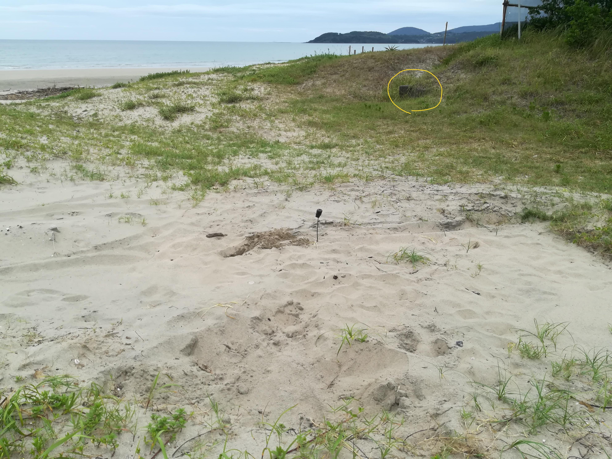 埋まっていると思われる付近。黄色で囲った小さなコンクリートは堤防。2020-08撮影
今は何もない。少なくとも手で掘れる深さにはなさそうだった。近くにある堤防は、もうふくらはぎくらいの高さしかない。もともとの高さを知らないが、少なくとも1m以上は高くなっていそうだ。
ORD 11: 岩船の概要を見る
↑阿久根七不思議／阿久根市の画像から
岩船は、阿久根の伝承として伝えられる大岩である。現在では砂に沈み確認できない。伝説、神社、地名の由来とセットで語られることが多い。
阿久根市ホームページ
折口海岸の折口川河口左側にある大岩です。日本三大急潮に数えられ海の難所として知られる阿久根北西部にある黒之瀬戸のうち最も潮の速い梶折鼻沖で、その昔梶が折られた船が折口海岸に流れ着き、そのまま岩となったものと伝えられています。現在は潮流の変化により完全に埋まってしまっています。また、その船に積んであった大鍋が流れ着いたとされるところには鍋石があり、地名も鍋石となっています。さらに鍋のふたや餅などが流れ着いたところとされる場所もあり、地名もそれらのものに起因しているといわれています。 ↑阿久根七不思議／阿久根市の説明文から。
- 現在は完全に埋まっている
- 地名に残っている
鹿児島県神社庁
古老の言い伝えによると、神代の昔、御祭神が石樟船に乗りここへ流れ着かれたので祀られたという。当社より五十間ばかりの波限にその石樟船といわれる大岩があり、帆柱を立てた跡や、艫には柁床の跡があり、又、柁は出水郷隼人の瀬戸の柁折の瀬というところにある奇岩がそれであるという。 阿久根市誌(昭和49年刊)1020頁にある言い伝えによれば、建久三年(一一九二)鎌倉幕府の命により、山門院に下向した田上資一が氏神として建立したものといわれている。棟札には「慶長十六亥八月十四日大檀那藤原義虎公 子孫繁昌…」と記されている。 出水風土誌(大正4年刊,昭和51年復刻)523頁によれば 建久三年三月鎌倉の命に依り山門院筒田郷に下向した、上出水村武本田上氏の始祖田江資一(四代目より田上を名乗る)が氏神として創建す。当社の傍らに船形の巨岩あり。田上隠岐守漂着の軍用船化石なり。地理纂考に曰く往古漂着せし唐船の化石であると。
↑石船神社 | 鹿児島県神社庁から。
- 神が流れ着いて祀られるようになったという話もある
- 田上隠岐守という名前は共通して出てくる
広報あくね
折口川の鉄橋から、筒田よりの線路下に、直径二米、高さ一・五米位のふたもついた鍋の形をした大石が鍋石です。これには、次のような物語があります。昔、丹後の国の田上隠岐守が、ある戦に破れ、海から逃れるときのことでした。九州の西海岸を南下して、天草をすぎ黒之瀬戸を通るとき大嵐にあいました。梶折鼻で梶が折れ、帆の木で、帆柱が折れて梶も柱も海岸に打ち上げられてしまいました。船は潮の流れに漂いながら、折口川の川口に乗り上げてしまいました。帆は岩船の持帆山に流れつきました。船に積んであった大鍋は、鍋石に流れ着き、鍋の釣は筒田に、年の瀬もおしつまった師走で沢山積んでいた餅は、餅井まで流れて行きました。梶が折れた処が梶折鼻。帆柱が折れた処が帆の木、船が座礁した処が岩船、帆が打ち寄せられた処が持帆山。鍋が流れ着いた処が鍋石。釣が筒田。餅が餅井と、それぞれの処で化石となったといわれます。地名もこの物語からつけられたともいいます。岩船は長さ十数米の岩で船の形によくにて帆柱を立てた後、人の足跡等もあるといわれていましたが、今は護岸工事のため砂に埋もれて、見ることができなくなってしまいました。市内大丸区 草原 新さん提供
- 地名に関する説明が詳しい
- 護岸工事のため砂に埋もれた
阿久根町郷土誌
折口にあり折口駅の北約三町、無格社伊勢神社付近の水田中にありて形幅も鍋に似たり。古老の口碑に依れば神代の昔石船神社の祭神蛭子命の石樟船に乗り折口に着かせ給いし御所持釜化石したるものなりと言い伝え今なお伊勢神社の祭典には法連を張りて敬意を表す。伝説に丹後国の某城主田上隠岐守某戦争に破れ逃れて海上薩摩に入り暴風に遭ひ黒瀬戸にて舵を折る。舵下出水(三笠村)字大漉と黒との中央海岸に押し立ち化石となりて今なお存在す。古来此地を舵折と呼ぶは之が為なり。船は風に任せて南に逸走し黒と深田の中央にて帆破れ帆柱折れて惨状を来す、帆柱はまた化石となり、岩船すなわちこれなり。岩船の南約一町半の所に持帆山と称する所あり。この船漂着の際帆の打ち寄せたる所なりという本船に積み込みたる軍用大鍋は、折口の内鍋石に漂流して沈み、化石となりて今なお存す。鍋の周囲二丈五尺高さ五尺に近し、蓋は全く分離せるものの如し。此の地を鍋石と称するはこれがためなり。その釣は脇本の内筒田に沈む、よってこの地を釣田といえしが、後世筒田と転訛せしものなりと。その兵糧は同地餅井須衛門氏所蔵すと、その数三六五個ありという。餅の化石に因み初めこの地を餅と称えしを後世餅井に転訛せりと。筒田の人古来門松を立てず。曰く隠岐守難船漂着の騒ぎに依り、はてはついに門松を建つる所の**なかりし遺風今に存するなりという。出水誌 編者いわく以下の伝説は阿久根尋常高等小学校にて収録せられたる郷土伝説集をそのまま採録せるものなり読者これを諒せよ
- 地名に関する説明が詳しい。ほかの説明とおおむね一致している
- 岩船神社の祭神は蛭子である
- 鍋石地区にある伊勢神社の祭典では鍋石に敬意を払う
ORD 12: 『阿久根の空襲』
『阿久根の空襲』のメモ。
メモ
※1945年5月13日阿久根市街地から5キロほど山手の桑原城地区への空爆午前の時間に、敵機35~36機で低空飛行による攻撃あり。
被害
・消失家屋22棟(藁葺きの屋根の為、延焼が早くまた消防団も敵機から、消化活動を阻害され被害が広がった。)
・機銃弾により、吉松キクノ(主婦)が大腿部貫通の重傷を負い、児玉重春(農業)の牛2頭が死んだ。
※同年5月13日上記の桑原城地区から海岸より2キロの折多小学校を中心に、数十機の艦載機が低空飛行で空撃した。
被害
・折多小学校全焼ほか死者1人負傷者不明
※同年5月13日折多小学校近くの折口変電所付近で列車が襲撃された。
被害
・死者1名ほか不明
※1945年6月26日阿久根市街地から南に10キロ下った大川地区(大川駅付近)の攻撃
被害
・列車に乗って下校中の中学生が二人死亡、50数人が重軽傷を負った。アメリカ機のB-17軽爆撃機を日本軍機と勘違いして手を振っていた中学生をめがけて、機銃が乱射された。列車はエンジンをやられ停止。負傷者を車外に連れ出そうとした中学生が撃たれ即死。
当時この列車に乗っていた人は『ドラム缶をハンマーで叩くような強烈な銃撃。山に逃げようとしたら爆弾を山に落とされ、崩れた岩が転げ落ちてきた。あの時の恐怖と言ったらなかった。両手で頭を抱えながら敵機が去るまで地に伏せていた。』と当時を語ってくれた。負傷者は、市街地にある内山病院に町の消防車で運び込まれたが、手当てを受けられない順番待ちの負傷者は、庭の戸板に並べられていた。当時、阿久根町内にはそれらしい軍事施設は無く西目にある上床山の山頂に防空監視塔がある位だった。
※1945年8月12日阿久根市街地から南に5キロ下った西目の飛松地区空襲午後3時ころ、3機の艦載機が低空で侵入、その中の1機が、西目小学校正門前の鉄道東側の田んぼに焼夷弾を投下、それと同時に機銃の乱射を行った。
被害
・36戸、106棟がたちまちに全焼。死者負傷者は無かったが、家畜の牛3頭が焼死した。多くの家屋が全焼した原因は、折からの強い西風と、藁葺き屋根、また待機していた消防団も敵機の銃撃のため、一歩も身動きがとれなかった。
(p29,30)
1945年5月13日・折多小学校焼失
当時阿久根町村役場職員 西 甚吉氏の日記から
昭和20年(1945年)5月13日、今日は三笠村役場へ公務出張の日だった。折口駅まで行ったとき、空襲警報だ。早速折口駅の防空壕に退避させてもらい、空襲警報が解除されたので、田島橋付近まで行ったところ、急に針金を切るような爆音とともに、実に群鳥のような艦載機が低空飛行して来た。思わず自転車をほったらかし、あわてふためきながら田島橋の下に避難すると、目の前の川にチュッ、チュッ、と機銃弾の水しぶきが上がり、橋の上でもパッ、パッと弾のはじける音が耳をつんざくばかりである。
橋台のコンクリートに体をぴったりとくっつけてようやく爆音の遠のくのを待ち、川からはい上がって見れば東の方が一面黒煙もうもうと天をおおっている。
もう三笠村行きは中止だ。駅のほうに引き返してみれば、今の空襲のため人影1つも無い状況だ。道路に機銃で撃たれたのだろう、男の死体が倒れている。しかし、黒煙の上がっている方が大事だと判断、急いでガードをくぐると、折多小学校は一面火の海に包まれているがだれ一人消火にあたっている人を見ない。大声で付近の部落に連絡し、ようやく、消防団員が駆けつけふと山手の方を見ると、また大きな黒煙があがっているところがある。懸命に駆けつけてみると、上桑原城部落が空襲を受けすでに13戸が全焼しつくしていた。
p56, p57
不発弾が阿久根に多かったのは何故か? 私の考えを述べますと、本来爆弾投下は高度からの攻撃でありますが、阿久根市街地の攻撃は低空からであり、そのため落下傘が開く間もなく地上に落ち、不発弾となったのではないかと思っているところです。また、田野澱粉工場に勤務していた時、アメリカ軍のジープがやって来ました。西目の上床山山頂にあった監視塔の壕の中から、日本軍の弾薬を没収し、田野澱粉工場所有の「田野丸」に積み、甑島と阿久根の中間の海で処分したと聞きました。(p106)
空襲を受けるまで阿久根小学校には、兵隊さんが駐留していましたが、空襲で学校も消失し、おれなくなった兵隊さんが、焼けて折れ曲がった銃身を担ぎ、隊を組みながら移動しているところも目にしました。しかし何処に行ったのかは、わかりません。(p109)
終戦の年、昭和20年は、空襲が激しくなり、学校は分散教育が始まった。学校は兵舎となり、沢山の兵士がはいっていた。生徒は各集落の公民館や神社に集まり、教師がそこへ出向いての学習態勢となった。(p115)
今は桐野への道はすっかり舗装され広くなっているが、50年前は雨が降るとぬかるみだった。物資は欠乏して靴も傘も無く、裸足で通う生徒も多かった。(p115)
阿久根小学校や折多小学校は、空襲を受けて燃えた。不平不満を言っては戦地で働く兵隊さん方にすまないと、大人も子供もよく頑張った。(p116)
7月10日には、脇本湾付近に停泊中の軍用船が襲われ、多くの軍属や船員が死傷した。その手当てに当たった脇本の仮屋園医院は悲惨を極めた。また、波留地区で多くの住家が、脇本の大漉松ケ根では農家が銃撃を受け消失している。幸いなことに脇本小学校、折口駅は数回にわたり機銃掃射を受けたが消失せず。教室の柱や壁に大きな弾痕を残したのみであった。(p120)
一方、米軍を迎え撃つわが軍の備えは、第40軍管下第303師団の伊藤連隊が、脇本および赤瀬川から阿久根海岸に1個大隊ずつ陣地を構築。また、出水海軍航空基地所属の陸戦隊は赤瀬川と脇本深田に砲2門ずつを展開していた。地域の住民はしばしば陣地構築に従事させられ、女学校の生徒は海軍の砲台で砲弾を磨く作業に従事していた。(p121)
当時、米軍に最も恐れられていた海軍の航空隊に、源田実司令が指揮する第343航空隊があった。世界に誇る紫電改で多くの戦果を上げていたが、その飛行隊長であった林重喜大尉(戦死後少佐)は4月21日、20機のB29の編隊と交戦、1機を撃墜したが、自分もエンジンを射抜かれ、折口海岸に墜落、戦死した。(p121)
水俣工場が空襲で打撃を受けたため、今度は高尾野町御岳集落に建設中の高射砲陣地作りに動員されました。その頃になりますと、出水の空をある時は南から北へ、ある時は北から南へボーイングB29の大群が青空に溶け込むように1万メートルの上空を編隊を組んで往来しておりました。それを見て切歯扼腕高射砲の発射を心待ちにしておりましたが完成したのち一向に撃つ気配なく、隊長に「何故撃たないのか」とつめよった事もありました。(p136)
Tasks
- p30の問い8の回答を写しもれた。「当時の様子がわかる地域の地図や写真はないか」
桑原城空襲。
- なぜ桑原城地区へ空襲した? 何か目標物があったのだろうか?
- 折口変電所付近の空襲の日付は間違っているように見える。本のほかの部分の記述と整合していないように思えるので確認する。
- 林少佐は撃墜は何日だったか?
- 味方機は登場せず、一方的な攻撃だったのはなぜか?
- ほかの都市と爆撃の時期を比較する
- B-17爆撃機とはどんな機体か
- 爆弾を山に落とすことがあるのだろうか? 鉄道網への攻撃ではないのか?
- 上床山の防空監視塔はどのようなものだったのだろうか?
折口空襲。
- 折口駅に防空壕があった
- 田島橋は今とは異なるか? 架設年的に、前の橋っぽい
- 下に避難できる構造である
- 橋台があり、コンクリート製である
- 隠れたあと「川からはいあがる」ような構造である
- 道路にいる人をピンポイントで狙っていて恐ろしい。上の被害の死者のことだろうか
- 折口ガードはこの頃からあった
ORD 13: 『出水・阿久根・大口の100年』
メモ
干拓築堤工事(出水市・昭和27年頃)
戦後の食糧不足に対応して、全国各地で干拓が盛んに行われた。遠浅の海岸をもつ出水地方は、すでに江戸時代から干拓が盛んだった。農林省による干拓は西工区から初められ、蕨島から土砂が気動車で大量に運搬され、島は陸続きになった。
p?
- 軌道が敷設されている
阿久根大島銀座(阿久根市・昭和40年)
昭和30年から40年代にかけて、阿久根大島が、夏場のキャンプ、海水浴場のメッカとして最もにぎやかな時であった。シーズン中は島の中心部に多くの出店が並び、野外の演舞場もできて、人々は大島銀座と呼んで親しんでいた。
昭和40年頃の黒之浜港(阿久根市・昭和40年頃)
古くから交通の要衝として重要な位置を占めていた黒之浜港は藩政時代、明治、大正、そして昭和50年代まで、長島、天草への渡船の基地であった。写真右端に見える船が、長島との間をつないでいたフェリー。
脇本港はにおける杭木の積み出し(阿久根市・昭和30年代)
脇本港は往年、北薩随一の良港として知られていたが、土砂の堆積が続き、今では大型船の入港はまったく見られなくなった。しかし、昭和30年代までは北九州へ移出する杭木の積み出し港として多くの船舶が出入りしていた。
ORD 14: 『阿久根の自然』
メモ
ふるさとに珠玉の自然
阿久根市誌編纂委員会
委員長 浜之上訓衛
昭和49年12月、1330頁に及ぶ阿久根市誌に続いて、市誌双書第1集・阿久根の昔ばなしが発刊されたのが、6年後の昭和55年でした。以来第2集・阿久根の文化財、第3集・阿久根の地名、第4集・阿久根のことば、第5集・阿久根の人物と続けて発刊されました。そして今、ここの第6集・阿久根の自然の発刊を見るに至りました。おそらくは、この第6集をもって、市誌双書は一応の完結を見たものと思えます。
- 阿久根の昔ばなし
- 阿久根の文化財
- 阿久根の地名
- 阿久根のことば
- 阿久根の人物
- 阿久根の自然
しかし、中には残念でならないこともあった。今では肥薩おれんじ鉄道となってしまった、国鉄鹿児島本線、折口駅の駅舎前に植えられていた、老カイズカイブキが、われわれの調査後伐採されてしまった事であった。今も残る肥薩線嘉例川駅前のカイズカイブキ等と同じく、鉄道開通以来の歴史を知っている銘木だった。
尻無川
尻無川は市内南東部地域に位置する尻無地区を、東から西へ横断するように流れている。水源は紫尾山の南部、西谷から流れ出て東支那海に注ぐ2級河川である。下流域の證海寺前では、南畑集落の江里山から流れてくる支流江里川と合流し、きれいな水が急流や渕をつくることもなく流れている。延長10kmあまり、川幅は下流域で約10m。アユ、ハエ、ウナギ、テナガエビ、モクズガニなど多くの淡水魚が生息し、初夏の夕暮れからはホタルが乱舞する清流である。古くは、川岸が固められ、河川敷には容易に降りられることもなくなっている。尻無川は、その名のとおり、川尻に打ち寄せる荒波で、大粒の砂礫が堰を作り、流水は砂礫の中を潜行して海に注いでいた。この尻の無い川ということから、阿久根七不思議の1つにもなっている。しかし、昭和61年に完成した尻無大橋の橋脚部防波ブロックにより、川尻への荒波が寄せなくなったいま、尻無川の川尻はいつも開放され、川と海は直接つながっている。
p20
折口川
折口川は隣町野田町を源とする3つの小川、すなわち、内田川、筒田川、小川内川が合流して折口海岸で東支那海に注ぐ、全長9kmの河川である。
しかし現在市内で最大の田園地帯である折口、多田の水田一帯は往年、これまた市内では最大の入江だった多田浦の跡である。当時は当然この3つの小川も、それぞれにこの多田浦に流れ込んでいた筈である。時を経るに従いこの3つの川から運ばれてきた土砂や、豪雨の為に湾内は浅くなり、次第に干拓地化されて来ていたが、戦後の折多地区潅漑排水事業の完成によって、現在の姿になっている。
しかし現在でもこの折口川の最下流では川は2つ岐れ、中洲状の田島と地区の人達が呼ぶ地帯が現存している。また河口近くには、市内最大の排水施設がつくられて、洪水から折口多田一帯の美田を守ることのできる重要な河川でもある。
往年の多田浦、折口川の変遷の証として川口の岩船、鍋石、それに内田川沿いの西家に残る糸印、またその南側丘陵地の奈良時代の遺跡など重要なものが多い。
p24
大川島の暮子島
阿久根市の南部、西目大川島の沖合いに周囲約500mの小さな小島がある。島の名をクレコ島という。江戸時代の「三國名勝図會」の「鷹口海岸」の中で「塩井崎より南行すれば、亦地形湾曲をなす湾中に沙島あり、暮小島といふ」と記されている。
周囲にある穴島、琵琶甲島は陸続きであるが、クレコ島は大川島湾の離れ小島となっている。ただし、年1回7月の大潮の干潮の際は、歩いて島に渡れるほど潮が引いてしまう。島には蛇や野ウサギが生息するが、この干潮の際、陸地からクレコ島に渡ったのだと古老は話す。
p46
深田沖の平瀬
深田沖の平瀬は東支那海からの黒之瀬戸入口と、脇本湾口のほぼ中央部にあり、満潮時は潮に隠れて全く見えないが、干潮時に姿を表す周囲約500m程の瀬である。
古くから、黒之瀬戸を通って航海する手漕の船や帆船は、ここらあたりで潮の流れの替わるのを待つ、いわゆる潮待ちをしなければ瀬戸の通過は不可能なことであった。
しかし嵐の日や、夜半では、この平瀬の存在に気付かず、昔から多くの船の遭難が起っていた。明治38(1905)年と翌39年の、新鹿児島丸及び第3宗敬丸が、この平瀬に乗上げ座礁遭難したことで当時は非常に有名になったものだった。
戦後の昭和27(1952)年対岸の小平瀬鼻に、海上保安庁は灯台を建設、その後この平瀬に小平瀬鼻平瀬探照灯を建設して、満潮時平瀬が海中に没した時でも、この探照灯は海上に現れていて、多くの船舶の遭難を回避する役目を果たすことになった。しかし現在でも海上交通の難所であることに違いはないが、釣りを楽しむ人達にとっては最上のメッカである。
p48
愛宕鼻
脇本湾口南東部の突端の岬を愛宕鼻と言う。
岬の海岸の三方はすべて巨大な岩で、直下の海まで約30mに及ぶ垂直に切立った最先端は、巨岩が大きく海にせり出して壮観を呈している。
終戦直後まではこの巨岩の上に、数百年を経たといわれる老松が生い茂り、脇本地区随一の景勝の地として知られていた。遥か東に望む紫尾の連峰、すぐ下に連なる脇本折口海岸の美観と共に、南に大島をはじめ4つの島々は、この岬より見た景観が最高のものと言われている。旧暦3月10日の脇本で中心的な花見の場所でもある。
岬にある愛宕神社はもともと、明治14年(1881)年下出水村の招魂社として建てられたものであったが、終戦後は三笠村の護国神社と名を変え、阿久根市との合併に伴ない、護国神社が合祀された後は愛宕神社として現在に至っている。
p55
梶折鼻
黒之瀬戸のほぼ中央で最も狭い海峡の小さな岬状の突端を梶折鼻と呼ぶ。対岸の長島は呼べば答えるほどの近さであり、黒之瀬戸大橋の橋脚も近くに建つ。最も狭い故に、潮の流れの最も激しい場所として、古くから知られている。引潮時の壮観は黒之瀬戸第一のもので、渦巻く潮の様相と響く潮流の音は、見る人の肝を冷やすに充分である。
往年九州地方の船乗り達が、「1じゃ玄海、2じゃ千々岩灘、3じゃ薩摩の黒之瀬戸」と、恐れた航海の難所であったことも、うべなるかなと思わせる場所でもある。
またこの地名の梶折鼻とは、古くからこの地方に伝わる岩船伝説に基く、あの岩船と化した船が、この突端で急潮の為に梶を折られ、その梶が海中に突っ立って岩となったと言う、一連の物語の中の梶が折れた鼻(突端・岬)と言う意味で、この名がついたものだと言われている。
今では正に黒之瀬戸観光の中心地で、近年この瀬戸を上下する「イルカウォッチング」の好地点でもある。
p58
脇本湾
脇本の中心部にあって古くは、北は瀬野浦を、西北には槝之浦を湾奥部とする大きな入江を有する湾であったが、天和の頃(元年は1681)、今の宮崎神社から三文字あたりに潮止めの堤防を築き、湾奥40町歩の干拓工事が行われ、更に120年後の寛政12年には現在の西徳寺下から豊受神社下までの約40間(約80m)を締切る干拓工事が完成した。
三國名勝図會にある脇本港は、天保の頃のものであるから、当然この干拓工事完成後のものである。…湾内に小嶼あり寺島といふ辮才天祠、叉邏所、及び砲台等あり、此地沿海の景状殊に勝れり、寛陽公行館の跡あり…。これが三國名勝図會の説明である。現在でも、東の愛宕と西の番所の岬に囲まれ、明治の元勲、寺島宗則ゆかりの寺島が湾の中央に位置し、脇本浜一帯の湾沿いには巨大なアコウの群落が見られ、北薩地区有数の名勝の地に変わりはない。
p62
脇本・折口海岸
脇本下村の愛宕鼻下より、折口の折口川河口までの約3kmに及ぶ海岸は、北は不知火海最南端から、南は大川鈴木段下の川内市との境界まで、40kmに及ぶ海岸の中で唯一浦波静かな汚れを知らぬ遠浅の白砂輝く海岸である。
脇本小学校の旧校歌に
浦波寄せて風も無き
青松白砂の白潟は
金波万里に映へるかな
と詠われていたものだったが、戦後青松の古木はすべて枯れ果て、今では白砂のみが残る海岸となってしまった。
しかし、今でも夏場は海水浴場のメッカとして、また四季を通じてサーフィン愛好者にも喜ばれる海岸でもある。
ここから望む阿久根大島をはじめとする4つの島の景観は、市内のどの場所で見るより優美に見え、特に島影に沈む夕陽の壮観さは圧巻である。また阿久根県立公園内のメインの1つでもある。
p70
五色ヶ浜
戸柱山の、すぐ目の前に阿久根七不思議の1つ「光礁」を見ることが出来る。この光礁は、三國名勝図會にも載った、阿久根を代表する絶景の1つである。
明治の歌人八田知紀は、
光礁の光る心を人とはば
神のみたまと吾はこたへん
と詠っている。光礁を右に見ながら海辺を西に行けば、白砂の浜に出る。凡そ200mほどで砂浜は尽きるが、この海岸一帯を五色ヶ浜という。この浜は、名前に恥じぬほどの美しい浜で、阿久根が生んだ海運業の雄、中村武吉が放流した真珠の母貝「アコヤ貝」の名残が見られるところでもあった。しかし、現在はB&Gの艇庫ができ、また青年の家も建ち、沿岸には人家が並び、加えて波消しブロックが積まれている。
この波静かな五色ヶ浜は現在でも近くの学校の遠足の定番の地である。
p76
桑島は、古くは雌島と呼ばれており隣接する雄島(大島)、小島(小島)と共に母子島と呼ばれていた3つの島の中の1つである。三國名勝図會でも、この母子島海上の風景佳絶にして当邑名勝の境なり、と記されている。
昭和30年代までは老松が生育し、見事な日本画的な風情のある島であったが、その松も大方枯死して、島の北部にわずかに残るだけとなってしまっている。更に以前は、クワズイモ等の亜熱帯植物の大群生も見られたものだが、今では全く姿を消してしまっている。島の地質は、全体が安山岩質の火山礫の溶結した角礫凝灰岩や角礫集塊岩を基盤にしたもので成り立っている。島の東側の一部に砂浜も見られるが、他のほとんどは、嶮しい断崖となっており、特に西側及び南側は、風波による浸蝕が激しき島の山頂まで切り立ったところや、洞窟状にえぐられた岩場である。このような嶮しい人を寄せつけない島の状況から、幕末頃、密貿易の場所であったと噂されたりしたものであろう。また、一説には大蛇の棲む島などといわれてもいたものだった。
p78
中津原の葉タバコ
脇本から折口にかかる中津原地区は、春3月から7月にかけて葉タバコ一色になる。3月はビニールですっぽり覆われた高畦が、陽光を反射して白く輝き、4月になれば成長した葉が何枚も増えて淡緑色が畦を覆いつくす。5月は成長が目立ち、茎も伸びる。6月には芯や腋も止められ、成熟した葉が下葉から上に向かって次第に黄化が進み、やがて畑一面が黄緑色の彩りに変わり、色に合わせて収穫、感想されてゆく。
阿久根の葉タバコ産地はここ中津原だけで、15haを11名の耕作者が生産している。全員が認定農業者として市長認定を受けた専業農家である。中津原畑地の約80%が毎年葉タバコ畑になっているが、この地区の土壌が砂質土で排水が良く、肥料の分解、吸収も早く、生育後期の肥料切れが良いことが、葉タバコの生産地として最適の条件を備えていることになる。
現在、この団地では第三種黄色種(香気の優れた品種)が栽培されているが、高度な生産技術を必要とするこの品種の栽培は、土地条件の良さと、生産農家の技術水準の高さで裏打ちされて、県下のトップクラスの葉タバコ生産団地として、古くから全国にその名を知られてきている。
葉タバコ栽培の歴史は古く、慶長年間(1596~1615)に出水郷内で試作されたといわれている。栽培地として、明治末期頃の記録では、下出水村下村小組合の名がある。
p140
折口駅のカイズカイブキ
このカイズカイブキは肥薩おれんじ鉄道折口駅の駅舎前にあるもので、古老の伝えによれば、旧国鉄折口駅が開業した大正12(1923)年に植えられたものだという。それからすれば樹齢は約90年ほどだと推定される。また幹周り2m、樹高10mの見事なものである。カイヅカイブキは、ヒノキ科の低木で、イブキの1変種であり、針状の葉がなく、枝がねじれるむきがあり、ほとんどは庭木や生け垣に栽培されたものである。このカイズカイブキは、約1世紀近く、脇本、長島地区の人達の玄関口とも言うべき役を果たしていた旧国鉄の折口駅で、多くの乗降客を送迎して来た。特に昭和の初期から終戦まで多くの出征兵士を見送り、また多くの白木の箱の無言の帰還を迎えた古木でもある。
p145
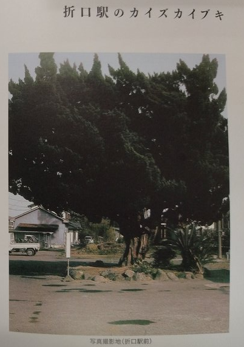
遠見ヶ丘のチャート
阿久根市街地の西側に連なる遠見ヶ丘は、丘そのものがチャートからできていると言えるぐらい、チャートが広く分布している。特にホテルや戸柱公園・光礁あたりに多く見られる。チャートとは珪岩が熱変性作用を受けてガラス化したものである。珪岩の元になる珪藻土は地球の歴史の中では、中・古世代に湖水または入江に珪藻が大量に繁殖し、何百万年・何千万年という長い年数の中でその死骸が積もってできたものである。
p193
黒神岩の岩石
阿久根七不思議の1つ黒神岩は、県道下東郷阿久根線沿いの阿久根中学校の北側にある。地質学的には石灰岩で太古の生物の死骸が積もってできたものである。その生物としては、サンゴ、甲殻類、貝類などで、今から3億年前から4億年前に繁殖し、多量の死骸が積もって地層を作ったものである。巻貝の祖先と言われるフズリナ(紡錘虫)や三葉虫等が代表的化石とされる。この古生代の石灰岩の地層としては、山口県の秋吉台、熊本県の球泉洞などが代表的なものである。この古生代の地層の一部が地殻変動で押し上げられて、地表に出ているのが黒神岩や光礁やその周辺に見られる古い地層・岩石である。地層としては古生層で、3億年以上前に海に積もってできたものである。
p195
多田層
阿久根市多田の宮前金徳氏宅で発見された第四紀層を多田層と名付け、調査研究して報告されている。(2000年、大木公彦、他)
郷土での第四紀層の研究報告が少ない中で大変貴重である。宮前氏の宅地整備で発見されたもので、200万年前迄の層である。露頭は面上5m、宅地面下1mで、厚さ6mである。宅地面の高度は海抜16mである。多田層の形成年代は、今後の研究で明らかになるものと思われるが、入戸火砕流が2万5千年前とされるので、それ以前である。多田層が海成層であることは、化石から言えることであるが、その化石はオオハナガイ、オオマテガイ、リュウキュウザルガイ、キヌタアゲマキガイが同定されている。
多田層を不整合に覆う礫層は丸内層と名付けられている。上限の分布高度は海抜19mで、見える範囲の層厚は3.3mである
p197
ORD 15: 旧陣之尾橋はどのようなものだったか?
概要
現在の国道3号線にかかる陣之尾橋とは別の、陣之尾橋がある。1994年に架けられた橋だが、それ以前は少し離れた位置に橋があったという。
↑スライダーを動かして航空写真で存在を確認できる。
現橋の基本情報。全国Ｑ地図から。
| 項目 | 値 |
|---|---|
| よみ | じんのおはし |
| 構造物種別 | 橋梁 |
| 路線名 | 市道陳之尾丸内 |
| 完成年(度) | 1994年（H6年） |
| 延長 | 28.8m |
| 幅員 | 7.2m |
| 管理者名 | 阿久根市 |
| 所在市区町村 | 鹿児島県 阿久根市 |
| 点検実施年度 | H30 |
| 判定区分 | ２(予防保全段階) |
| Ｑ地図管理ID | 1015250 |
- 同時にかかっていた時期があったのか、同時に廃止だったのかわからない。位置的には新しい橋がかけられたことで廃止されたか
- 旧橋の情報は不明
- 1950年代の土地改良の後の、直線的な川の位置に架けられているので、そのころに作られたものだろう
ORD 16: 中津浜海岸沖にある人工物は何か?
中津浜海岸沖にある、海中にある四角形の影は何なのだろう。航空写真を合成する都合だと思っていたが、違うようだ。
ドローンの空撮動画にも影が写り込んでいる。
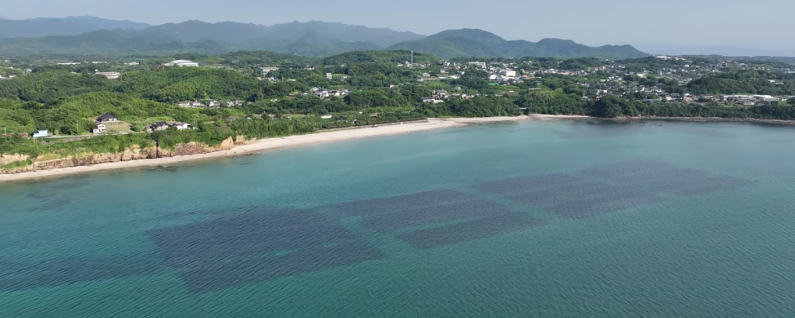 脇本海浜・折口川・牟田地区 ドローン空撮 06:41付近を切り取り
- 港近くだということに意味があるだろうか。砂浜から港に砂が流入してくるのを防ぐとか
- 完全に海中にあるように見える。生簀などではなさそう
- 1974~78年の航空写真にはなかった
ORD 17: 中津浜海岸近くにある2つの橋台は何か?
概要
- 肥薩おれんじ鉄道の高架がある
- 橋台が2つあり、片方にしか橋が架けられていない
- 橋の前後は2線敷けそうな幅があるように見える
- 航空写真で遡ってみても、ずっと同じ位置にあるように見える
- 外観を見るに、建設された年代に大きな違いはないように見える
 2024-08撮影。橋の下から見る
2024-08撮影。橋の下から見る
 海岸から見る
海岸から見る
 右に回って、海岸から見る
右に回って、海岸から見る
国土地理院の衛星写真で比較すると、ずれていて、1970年代だと右の位置にあるように見える。ただ、このへんの航空写真は道路や海岸付近など、全体的に右にずれているようだ。地図の歪みの可能性が高い。
ということで航空写真での確認はできていないが、橋の前後で隣に一線敷設できる空間は確かにあるようだ。
関連
なし。
ORD 18: 『雄飛 創立百周年記念誌 阿久根市立折多小学校』
メモ

- 100周年記念時(平成5年)に、新校門となった。真っ白に見える
- 100周年記念碑はこのときに建てられた
私どもの折多小学校は、明治20年折口簡易小学校・多田簡易小学校として発足しましたが、明治26年両校が合併し、折多尋常小学校として創立致しました。
以来満百年、その一世紀の間に社会情勢の変化に伴い、学校も幾多の変遷を重ねながら今日まで限りない発展を遂げてまいりました。
その間、本校を巣立った3500名近い卒業生は、郷土の発展に努力されたり、全国各地に雄飛されて、国家社会のために活躍されている現状は、誠に心強く、本校の誇りとするところであります。
この意義深い本校の創立百周年の年を迎えるに当たり、校区民待望の屋内運動場の完成、校門周辺の整備等がなされました。このことは、本校の百年の歴史にあたかも華を添えるものであります。
本校の創立百周年を記念するため、校区民一丸となり折多小学校創立百周年記念実行委員会を発足させ、松尾直義委員長を中心にいろいろな記念事業を計画実施致してまいりました。
校区民はもとより、県内外の卒業生や市当局をはじめ関係各位の絶大なるご協力とご援助によりまして、記念事業のすべてが終了致しました。
この記念誌の発刊も記念事業の一環であります。「見やすく読みやすい記念誌」「”小学校は心の故郷”永久保存版として恥ずかしくないもの」等7つの目標を立てて編集してあります。後世に残る重要な事業だと思います。
...
(第1章)
さて、私どもの折多小学校は、明治20年、折口簡易小学校、多田簡易小学校として、発足しましたが、明治26年、折口簡易小学校と多田簡易小学校が合併し、折多尋常小学校として創立しました。明治41年には尋常科6年制が実施され、大正3年に敷地拡張、大正4年に校舎新築と漸次学校としての内容や施設設備の充実整備がなされてきました。
昭和16年、戦時下にあって、折多国民学校と改称、昭和18年には高等科が設置されております。
しかし、残念なことに昭和20年5月13日の空襲のため、校舎並びに備品等が全焼し、これまでの学校の沿革や公簿、記録等を消失、戦前の学校については不明な点が多いです。昭和20年8月、終戦を迎え、昭和22年4月1日から学制改革により折多小学校と改称され、今日に至っております。
...
記念事業として、校門の改築整備、緑化、校旗、グランドピアノ購入其の他。体育館緞帳、記念誌、事務経費その他。2300万円のお金は、金額だけでは計れない大変価値のある浄財であります。以上の記念事業にあてさせていただきます。
...
(第1章)
記念誌の中の沿革史は、重要な部分であるとの認識は皆様と同じですが、御存じのように折多小学校は昭和20年5月の空襲で全焼し、貴重な記録の総てを失いました。
昭和6年発刊の阿久根町郷土誌にも尋常小学校の設立時の記載だけで、他校のように、沿革史の部分がありません。阿久根町役場も昭和20年に焼失し、阿久根市誌には、折多小学校の箇所に、空爆のため沿革史等焼失し戦前不詳につき昭和20年以後を記載したとして歴代校長名をしるしています。1893(明治26年)年から1945年(昭和20)年まで、実に半世紀、52年の空白があります。後日何とか掘り起こせないものかと考えています。
一般的な世情や教育の流れの中で、折多小学校百年のあゆみを振り返りたいと思います。
(まえがき)

明治10(1877)年1月 折口、多田の両地にそれぞれ寺子屋式教育機関が発足
・多田寺子屋式教育機関(後、簡易科小学校)
明治10年以前は、士族の子弟でなければ手習いや学問は禁止された状態であった。これでは農家や商家の子弟は駄目になるとの声が高まり、有志が集合相談の上、折口村、多田村の独自の力で寺子屋を建て、教育を始めた。それは明治10年1月のことである。(当時は折口村、多田村で合併した阿久根村は明治22年)
当時は資格をもった先生がいる筈もなく、有識者が皆の委託を受けて教授したのであろう。生徒も多数とは考えにくく、比較的裕福な家の子弟か、向学心のある子どもであったろう。寺子屋の大きさ、先生、生徒の人数等不明である。
場所は現在の多田消防分団詰所から見て丸内の方角で、記念碑(河川及び道路)のそばの空き地、又は記念碑のすぐ前の道路から記念碑をみて、その後方約10メートル先から堤防までのあいだの処である。そこには1本の大きな松の木があって、多田の村民が集まって会合を開く場所だったとのこと。現在は堤防、道路、記念碑の処はかさ上げ、埋め立てによりだいぶ高くなっている。多田1222-1の堤防よりの所である。
p29
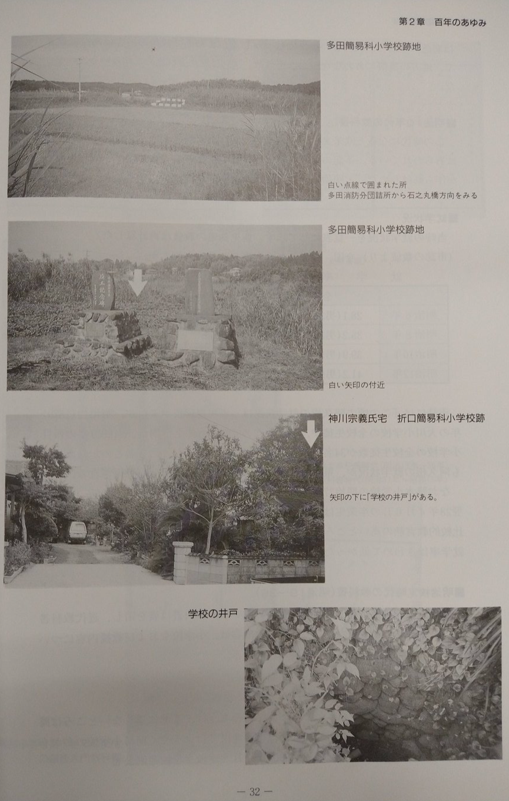
(明治6〜12年の就学状況表)
市誌には「この頃の阿久根の就学状況は、不明な学校が多いが、明治12(1879)年の大川小学校の全校生徒数が34名で同年の第1回卒業生が、たった2名との記録を見ても阿久根の就学状況が、県平均よりも更におくれていたことが想像される。
なお脇本小学校の明治27(1897)年4月4日の卒業生が男子17名、女子1名で、翌28年4月6日の卒業生は、男子21名、女子3名で計24名となっている。脇本は比較的教育熱の高いところであったが、それでも就学率は以外に低く、特に女子就学率はきわめて低かった。」としるされている。
ORD 19: 岩船の埋没地点を比較する
折口海岸の折口川河口付近には阿久根の七不思議の1つである、岩船がある。潮流の変化によって砂に埋まってしまい、現在はみることはできない。埋没地点を確認する。
↑スライダを動かして埋まっている地点を確認できる。
関連
ORD 20: 牟田の海蝕洞を観察する
概要
牟田の海岸に、海蝕洞がある。周囲と隔絶された雄大な秘境を感じられる。
アクセス
砂浜からアクセスした。

このような南側からのルートで、潮位が充分に低いと普通に地面を歩くだけで到達できる。潮位29だと余裕で行ける。赤色の部分がシビアな部分で、黄色を通過できても、まだ赤色の部分は海中で、通行できないことがある。
距離が長いが、急斜面からアクセスするより簡単で安全である。
 周辺の切り立った崖と崖下の砂浜。https://www.youtube.com/watch?v=6wqgxvOMQkc の12:14あたりを切り抜いた
周辺の切り立った崖と崖下の砂浜。https://www.youtube.com/watch?v=6wqgxvOMQkc の12:14あたりを切り抜いた
↑一帯の砂浜はこのような絶望的な高低差のため、陸上からのアクセスが難しい。いくつか壁をよじ登るような獣道は存在しているのだが、激藪に覆われていて発見が困難なのと、一帯は農地であり農家の人に怪しまれるので、海沿いに歩くのが一番良い。
海蝕洞
 海蝕洞。2024-08撮影
海蝕洞。2024-08撮影
↑開口部上にある木を見ると、なんとなくスケール感がわかる。隠された乗り物が出てきそうな、秘密基地チックなデザインをしている。いい具合の四角い形をしていて、さらにそのまま海に出発できる感じで海の道が開けている。
 海蝕洞にズーム
海蝕洞にズーム
↑空洞は右に入り込んでいて、洞窟の行き止まり部分は確認できない。いくつか転がった岩が海面上に見えている。
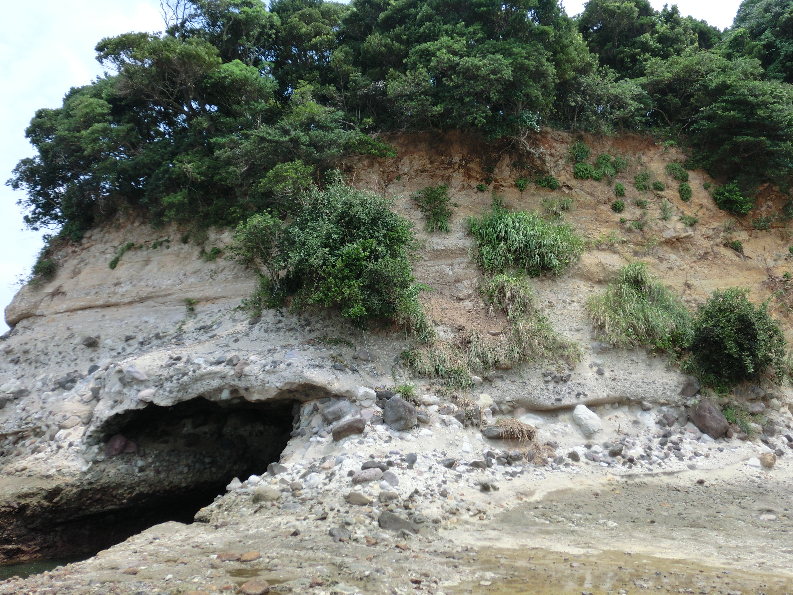 洞窟の上を見る
↑洞窟の上は岸壁になっていて、圧倒される。これだけの重さを上に乗せて、それなりの横幅と深さが空洞になっているのを周囲の壁が支えている。あとどれだけ耐えられるのか想像もつかない。
開口部直上の、オーバーハングした部分に生えている頼りない木には、古びたロープがかけられていた。このロープで開口部直上を通って対岸に渡れということなんだろうが、恐ろしくてできなかった。同じものという確信はないが、このロープは、約15年前(2009年)からかけられていた記憶がある。
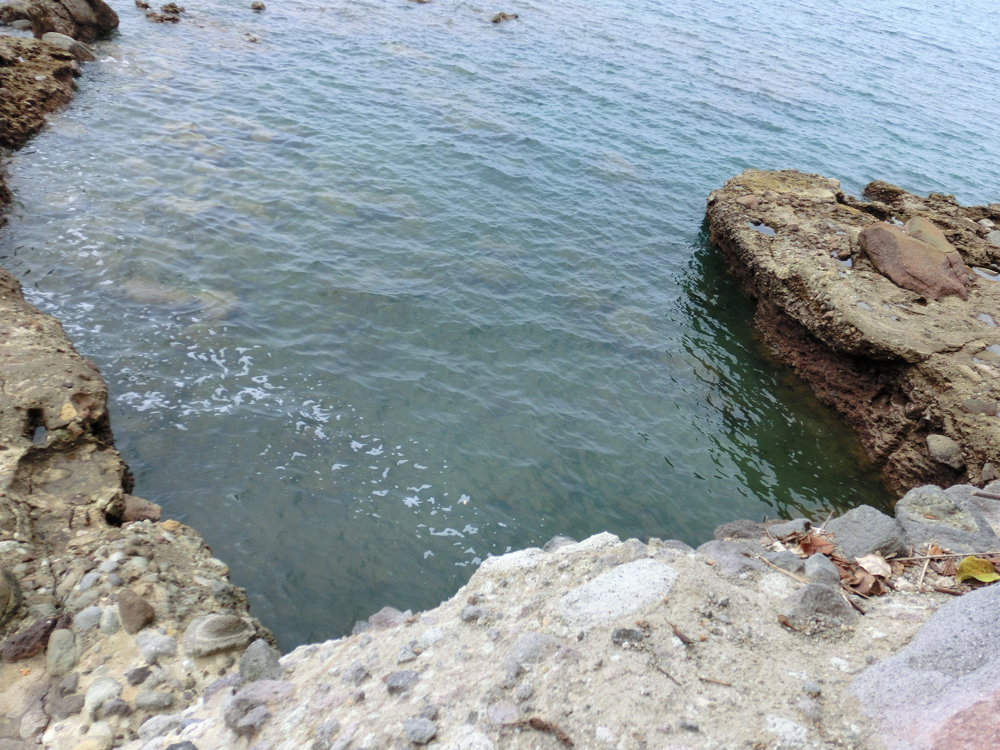 洞窟直上のひさし部分から、開口部を下に見る
↑これが精一杯だった。高さがある上に、足場が傾斜していて怖い。かなり潮位は低いにも関わらず、海面は深い色をしていた。常時海水で満たされているのだろう。
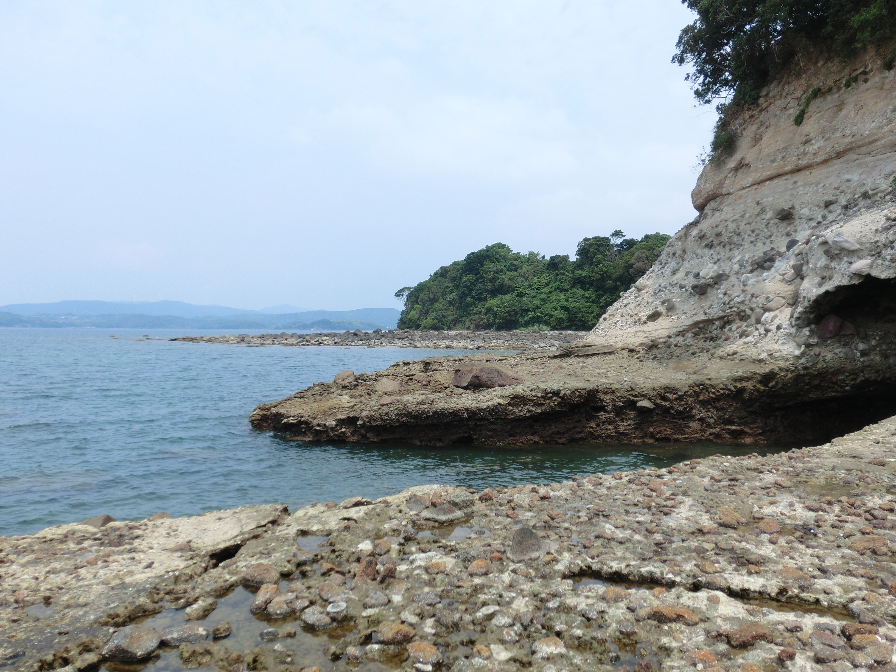
数メートルを海に隔てられた2つの陸地が見えるが、距離以上に遠い。上部の斜面を渡りきるか泳がないとたどり着けない。
関連
なし。
ORD 21: 田島橋下にある構造物は何か?
概要
田島橋は、阿久根市折口にある橋である。昭和42(1967)年竣工とのこと。
橋の下には、何かの構造物がある。
 2023年撮影。下流側の橋台から東に撮影した
2023年撮影。下流側の橋台から東に撮影した
水中にある細長いものと、水中から伸びて水面から突き出すコンクリートの基礎っぽい何か。以前かかっていた橋の痕跡ではと考えているが、確証はない。
 2023年撮影。上流側の堤防から東に撮影した
2023年撮影。上流側の堤防から東に撮影した
関連
なし。
ORD 22: 折多小学校前の歩道帯はなぜ幅が広いのか?
概要
折多小学校前の前の歩道帯は、広く取られている。緑化部分も合わせると、隣の国道3号線の道路と同じくらいの幅がある。
また、校門前はスロープと階段で構成されている。広いスペースまで直線の階段1つでいいように見えるが、このスタイルになっているのはなぜなのだろうか。
 2024年のGoogleストリートビューから
2024年のGoogleストリートビューから
ORD 23: 校門の比較をすると面白そう
概要
多くの公立学校の校舎は、コンクリート造の同じような形をしている。
しかし校門に関しては、同じ市内であっても統一された様式がなく、学校によってまちまちであることに気づいた。地域で最長級の歴史をもつ学校の顔として、誇りを持って迎えているように見える。
比較してみると面白そうに見える。
関連
- ORD 22で、比較していて気づいた
ORD 24: 岩船神社を古写真で比較する
概要
岩船神社の鳥居と社殿を写した古い写真がある。現在は、鳥居の向こう側は森が迫っていて、同じアングルで撮ることはできない。
 阿久根市誌より
阿久根市誌より
- ↑
- 白黒写真でよくわからないが、もともとは白色だった? 現在は黒色に見える。コンクリート製の鳥居の表面は傷みが目立った。海風のためか、侵食が激しいように見える
- 木々が少なく、空が広く見える
- 鳥居の後ろに転がっている材木?は何なのだろう
 2022年ごろ撮影
2022年ごろ撮影
- ↑
- 現在の鳥居には「昭和42年9月再建」とあった。古写真に写っている鳥居と同じだろう
 2020年ごろ撮影
2020年ごろ撮影
ORD 26: 土地改良前の田島橋周辺の航空写真を比較する
1948年と現在(2024年)の航空写真を比較した。土地改良前なので、折口川の流路が大きく違う。
 https://nemotos-office.sakura.ne.jp/14-4.html上で作成。GIF作成をどうにかできないものか...
https://nemotos-office.sakura.ne.jp/14-4.html上で作成。GIF作成をどうにかできないものか...
- 写真の歪みと重ねの誤差がかなりあるだろうが、周辺の道路の位置はほぼ一致しているように見える
- 画像右にある新川橋、画像左にある折口橋は現在架かっているものと同じはずなので、位置と形状は信頼できる
- 旧田島橋の位置はごくわずかに下にあるように見える。1メートルないくらいに見える
- 川幅は現在の2倍ほどあり、その分橋の長さが長い。真ん中の島で橋は2つの部分に分かれていたのかもしれない
- ダイヤ型の中洲のようなものがあって流路が狭い。どのくらいの高さがあったのかはわからない。中洲の左側の流路はとくに狭く、道路部分だけがつながっていて橋がかかっているように見える
 https://mapps.gsi.go.jp/map-lib-api/apiContentsView.do?specificationId=42918
https://mapps.gsi.go.jp/map-lib-api/apiContentsView.do?specificationId=42918
↑別角度で見る。
- 水面部分には橋による影があって、橋の真ん中の陸地には橋による影がない。同じくらいの高さがあったように見える。
元画像
関連
- ORD 21。調べるきっかけになった疑問
ORD 27: 折多小学校前の線形改良を比較する
1961~1969年(左)と現在2024年(右)の航空写真を比較した。
古い写真では現在よりも、小学校よりにある。今より角度がきつく、30度くらいのカーブになっている。
ということで、現在の学校前の歩道がむやみに広いのはもともと道路だったのを、おそらく線形改良のために(あきらかに滑らかなカーブになっているので)、学校と離れた方向に新しく道路が作られたから、ということ。土地の所有者は公的機関だろうし、用途がある土地でもないのでそのまま歩道となっている、ということだろう。
関連
- ORD 22。調べるきっかけになった疑問
ORD 28: 阿久根東郷線は並行在来線問題の補償として整備された
九州新幹線建設にあたって、並行在来線問題が発生した。阿久根市は新幹線駅が設置されないため、在来線の第三セクター化に反対の立場だった。並行在来線の第三セクター化を認める見返りとして県がいくつかの振興策を行うことで阿久根市は合意した。その経緯で、70年放置されてきた阿久根東郷線は整備されたという。
ほかの路線と比べて難所が多く、高級なインフラがかけられているのがわかる。市街地の立体交差、登坂車線、長大トンネル、谷を渡る長大橋、大規模な掘割など。
関連
なし。
ORD 29: 土地改良記念碑を観察する
昭和26年に着工した鹿児島県の土地改良によって、阿久根市折多地区は様変わりした。当時の土地改良記念碑があることは知っていたのだが、どこにあるかがわかっていなかった。

古いストリートビューを眺めていて、たまたま発見した。
外からは見えないが、土手上の道は最低限管理されているようで、草が刈られて1人通れるスペースがあり、撮影できた。
観察する。
- 3~4メートルある
- 折口川の土手上に築かれている
- 国道3号が後ろになるように撮影している(石碑の裏面が写っている)
- 表面は国道3号から見えやすい方向にある。「土地改良記念碑」と大きく刻まれている
- 石碑は協賛者が彫られた土台部分と、題が彫られた一枚岩からなる
場所は、国道3号線が折口川を渡る橋(陣之尾橋)の付近にある。
見てわかるとおり、本体は完全に蔦に覆われ、存在を忘れ去られている。周囲も高い草木に覆われていて、このサイズに関わらず周りからは全く見えない。これはこれで自然に任せた廃墟感があって魅力を感じることもありそうだが、先人が建立した目的を達してはいない。当時の人たちは喜びや誇りを後世に伝えるために建立したはずだ。
ORD 30: 大川の鉄橋を観察する
概要
鹿児島県阿久根市の大川川にかかる、肥薩おれんじ鉄道の鉄橋を観察した。
- 橋は川沿いの車道と交差していて、通れる
- 川底から生えている橋脚は2つあり、高さは10メートル弱くらいある
- 橋脚は高さの割に細い印象を受ける
- 橋脚と、車道から見える橋台部分は石積みである。積み方は布積みであるように見える。開業当初からのもののようだ。後から建設されたなら、コンクリートになるだろう
- 同じ路線の、米ノ津川にかかる広瀬川橋梁と類似した外観に見える。広瀬川橋梁は川内線として開業した1923（大正12）年に建設された
- ガードの川側のコンクリート壁は「1974-3」とあり、同じ年代ではなさそうに見える。周辺は1970年代に水害対策で大川駅高架化など改修されている


関連
ORD 31: 折口浦干拓の水門はどこにあったのか?
概要
鹿児島県阿久根市折口の干拓は、どのようにして行われたのだろうか?
現在も昭和時代に作られた排水樋門が設置され洪水を防いでいる。水流の操作は当然干拓にあたっても必要で、当時の水門もどこかにあったはずである。周辺の干拓地、例えば出水市江内には江戸時代に作られた樋門が残されている。似たような工法で行われた可能性が高く、似たような遺物が残っている可能性がある。
関連
ORD 32: 田島橋付近にある改修記念碑には水門が記載されている
概要
鹿児島県阿久根市折口の田島橋の近くに、ひっそりと改修記念碑がある。

水 里
門 道
大 改
正 修
七 紀
年 念
碑
x
x
なぜこういう書き方になっているのか、記念碑の書式を知らないのでわからないが、ストレートに解釈すると里道と水門を改修した記念碑、ということだろう。
ここからわかること。
- 「改修」なので、里道および水門が大正7年以前から存在していた
- 里道と水門は近く、あるいは一体として存在していた
閲覧できる中で、当時に一番近い航空写真を見てみよう。戦後の土地改良工事以前なので、川の流路や幅が今と違う。川から少し離れた今の石碑の位置は正しいようにも見える。
橋が渡る川の中央には陸地があり、水門を設置できそうな地形になっていることがわかる。二股に分かれた川の両側とも、狭まった位置に橋がある。橋はそういう位置にかけるから当然の可能性もある。
ほど近い干拓地の出水市江内に残る、江戸時代の樋門は以下のようになっている。こういったもののイメージをしている。開閉を人力で操作し水門上まで移動できること、強度上の問題で仕切る板を短く複数枚にすること、などでこういった形に落ち着くように見える。
予測地点が決まった。しかし過去あったとしても、川まわりの地形が全く変わっているので、何か残っている可能性は多くなさそうに見える。
関連
- ORD 31: 折口浦干拓時の樋門はどこにあるのか?。出発点となる疑問
ORD 33: 国道499号線の阿久根市区間の概要を見る
概要
国道499号は、長崎県長崎市から鹿児島県阿久根市に至る国道である。海上区間が多くを占め、阿久根市側の陸上区間は62mしかないことでネタになる、レアな国道である。
国道の終点にありがちな玉のモニュメントがある。

関連
ORD 34: 『道路開鑿記念碑』の解説文を見る
概要
鹿児島市山下町には『道路開鑿記念碑』と解説文がある。
鹿児島県は三方を海に囲まれ、暖かく肥沃な土地で、海陸の産物に恵まれている。しかし、県内は複雑な地形がいたるところにあり、道路が悪く、交通も不便で産業が振るわず、県民はとても苦しんでいた。当時の渡辺千秋知事(明治13年7月~明治23年9月)は、このことを憂い、県民のために道路を整備することとし、県議会に諮って賛成を得た。
県民をこれを聞き競って建設費を寄付し、また、政府は国庫補助金も出した。渡辺知事に代わった山内提雲知事(明治23年9月~明治25年11月)もこの事業の必要性を大いに認め、自ら先頭に立って吏員や県民に対して、この大事業を成し遂げうるのは、いかにつらくともこの仕事の他に無いと、促し激励した。
明治20(1887)年6月に着工し5年の歳月を経て完成したものである。資金は50数万円で、整備した道路の延長は100里(約400km)余りであった。
国道として、
その一 国道37号は、鹿児島から市来、川内、阿久根、米ノ津を経て熊本県境に至る26里25町余り(現在の国道3号、約105km)
- 国道37号(明治国道のナンバリング)の後に国道3号となった
- 複数路線が同時期に整備された
- まだ自動車用ではなく、舗装されてないはず。昭和の市報で舗装工事が掲載されていたため
- 記念碑は平田橋たもとから移設された
関連
- ORD 33: 国道499号線の阿久根市区間の概要を見る。道路つながり。国道モニュメントがすぐ近くにある
メモ
阿久根市折口
人口
昭和28年(1953)5月の学校ごとの人数
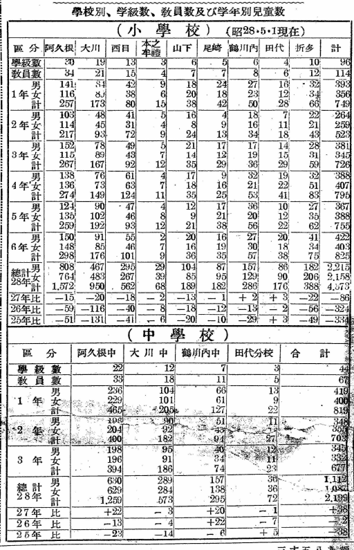
各学校の人数。多い。今とは全然異なる。特に大川が多いのが不思議。薩摩街道だったためか? まだ三笠町は合併してないので記載はない。
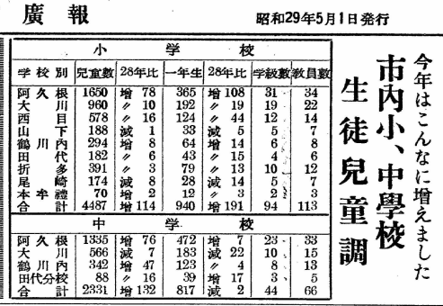
道路
- 1989年（平成元年）3月29日 - 鹿児島県告示第696号により「鹿児島県道365号折口陣之尾線」が廃止され、告示697号により鹿児島県道365号脇本赤瀬川線として認定される
- 現在の国道389号が開通するまではこの鹿児島県道365号脇本赤瀬川線を国道389号としていた
- 1987年脇本バイパスと呼ばれる区間が開通
- 開通時の記事
- 広報あくね490号 https://www.city.akune.lg.jp/material/files/group/67/kohoS6211.pdf
- 1987年脇本バイパスと呼ばれる区間が開通
観光
大島キャンプ場の人数。重視していたことがわかる。
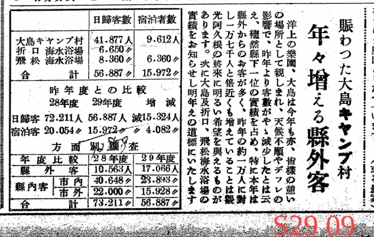
昭和27年の観光の人数。県で1位だったとのこと。鹿児島県内の旅行先によく選ばれていた時期があると聞いたことがある。
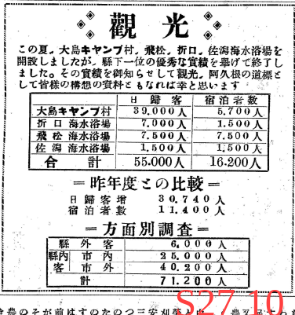
郷土史
赤瀬川の無銘の墓は外国人の墓とのこと。

- 月見橋は黒之瀬戸。木橋なので現存は怪しい。
- 園田橋は写真集に比較画像があった気がする

似たような話は折口にもある。波留にもあった。
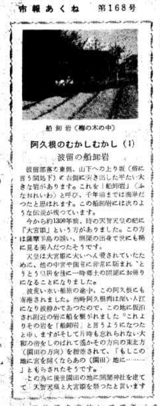
中央公園の不動明王の解説。

密貿易の島だったという。上陸は難しいらしい。
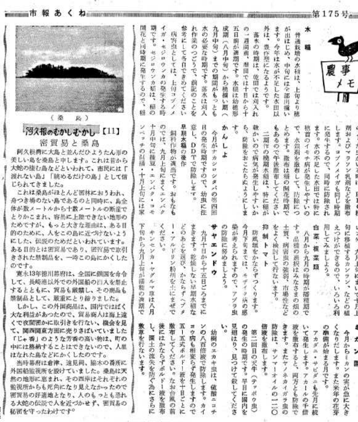
阿久根の来歴に関する資料。
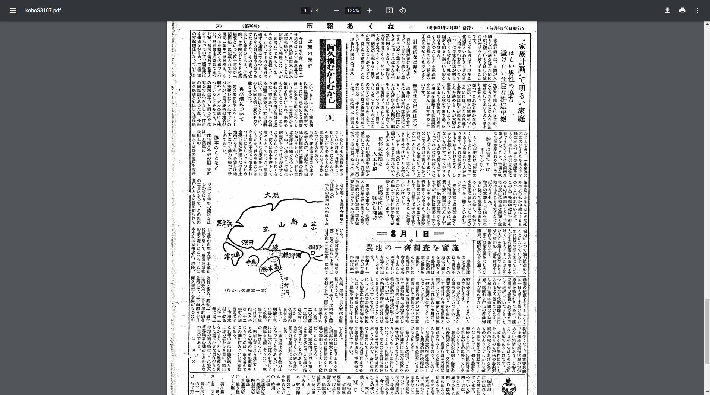
折口
陣之尾は養蚕業が盛んだったとのこと。

折多地区土地改良工事中の貴重な写真。ぐちゃぐちゃ。どのへんか不明。

- 阿久根市には平地が少ない。増産の余地のある数少ない田園地帯の1つだった。戦後最優先で建設されたように見える
- 折口川の流路が大きく変わった。以前は蛇行していて、河口付近でふた手に分かれていた。現在は1つになっている
- 1940年代の航空写真で確認できる
- 土地改良工事は昭和26年(1951)から開始され、昭和31年(1956)に完工した
- 阿久根市報のバックナンバーは昭和26年から公開されているが、初期は状態が悪く文字を判別するのが難しい。まだ手書きで写真の掲載はないようなので、記事があったとしても画像を確認するのは難しい。文献を調べる必要がありそう
- 市誌か、新聞のバックナンバーを見る
- 排水 + 土地改良 で構成される
おそらく現存する。ボロい建物だとは思っていた。
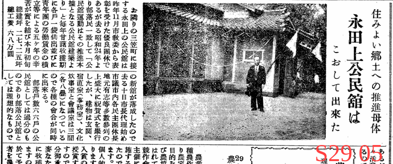
小学校の校門と校舎の建設。校門は現存しているように見える。

内田の石堤。どこかはよくわからない。


↑排水機場之完成記事。広報あくね 448号
神社
古老の言い伝えによると、神代の昔、御祭神が石樟船に乗りここへ流れ着かれたので祀られたという。当社より五十間ばかりの波限にその石樟船といわれる大岩があり、帆柱を立てた跡や、艫には柁床の跡があり、又、柁は出水郷隼人の瀬戸の柁折の瀬というところにある奇岩がそれであるという。 阿久根市誌(昭和49年刊)1020頁にある言い伝えによれば、建久三年(一一九二)鎌倉幕府の命により、山門院に下向した田上資一が氏神として建立したものといわれている。棟札には「慶長十六亥八月十四日大檀那藤原義虎公 子孫繁昌…」と記されている。 出水風土誌(大正4年刊,昭和51年復刻)523頁によれば 建久三年三月鎌倉の命に依り山門院筒田郷に下向した、上出水村武本田上氏の始祖田江資一(四代目より田上を名乗る)が氏神として創建す。当社の傍らに船形の巨岩あり。田上隠岐守漂着の軍用船化石なり。地理纂考に曰く往古漂着せし唐船の化石であると。
- 民話 広報あくね460号 https://www.city.akune.lg.jp/material/files/group/67/kohoS6005.pdf
地誌
鹿児島県地誌 262ページ付近に折口村、多田村の記載がある。
- 折口村の字地
- 永田原
- 鍋石
- 折口
- 多田村の字地
- 陣之尾
- 黒蕨
- 内田
- 大下
- 大川村3900人。多い
- 多田村470人
- 折口村500人
地図
埋め立てる前の地図。砂浜が町のすぐそばに広がっていたことが確認できる。北部の国道3号線ではまだ陸橋ができていないので、鉄道と国道が立体交差していない。
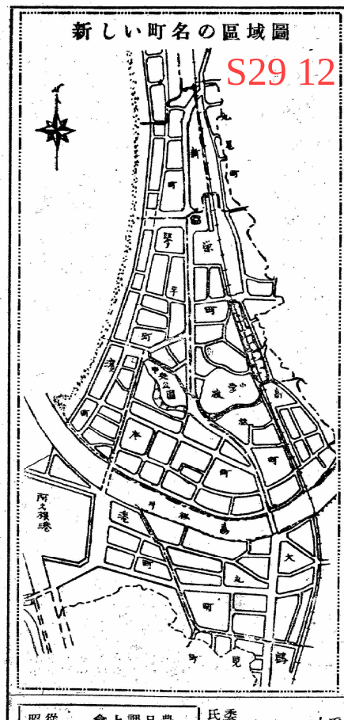
その他
なんかほほえましい。
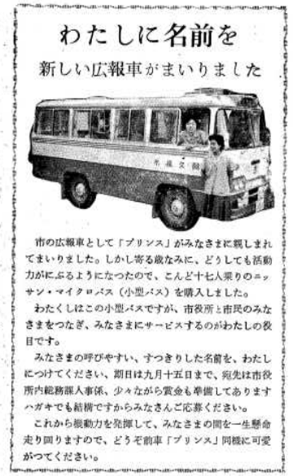
体育大会の記録。入賞しまくっている。
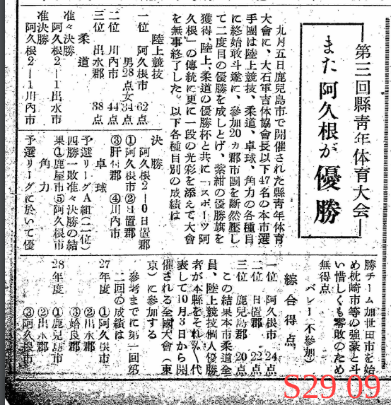
黒蕨
『阿久根町郷土史』30ページから。小字に黒蕨というのがある。地図にも記載されているが聞いたことがない。どこにいったのか?
永田原
『阿久根町郷土史』30ページから。小字に永田原とある。現在は永田上、永田下となっている。
大下城
『阿久根町郷土史』51ページから。古戦場。
陣之尾
『阿久根町郷土史』55ページから。古戦場。
永福寺跡
『阿久根町郷土史』61ページから。
五色浜
『阿久根町郷土史』64ページから。名勝。
脇本街道
『阿久根町郷土史』69ページから。当時の県道か。
岩船公園
『阿久根町郷土史』69ページから。
鉄道開通後里人相謀り石船公園として境内に人口を加え社殿を改修し以て**の面目を一新せり境内に日露戦役記念碑あり。又大弓射的場を設備せり神社の南約二町河口の白砂に横はる黒き大岩はこれ即ち岩船なり。
- 景勝としての岩船と、神社としての岩船神社と、公園としての石船は区別しているのだろうか?
- 岩船は黒いのか
鍋石
『阿久根町郷土史』116ページから。
- 筒田は釣田がなまったもの
- 持帆山は帆が流れついたから
- 餅井は餅がなまったもの
- 筒田の人は昔門松を立てなかった
阿久根尋常高等小学校で教えられていた郷土修説集の話からそのままもってきたらしい。当時の作話の可能性もある。
岩船
『阿久根町郷土史』131ページから。地名のところは同じだが流れ着いたのが神様。
- 戸柱公園は戸柱が漂着したから
- 岩船には人の足跡と帆柱を建てる穴があった
道路
『阿久根町郷土史』169ページから。
- 現在の国道3号線は昭和6年時点では、第二号線といったらしい
- 県道。二、折口停車場折口線。三、折口停車場陣之尾線。五、阿久根牛深線
鉄道
『阿久根町郷土史』297ページから。
薩摩大川駅は1931年当時まだない。開業は1936年でほかの阿久根市内の駅より新しい。
川内線が開通したあと、鹿児島本線に改称した。
学校
第七項 折多尋常小学校
本校は折口駅を東にへだてる約56町国道に沿いて交通は便なれども部落に遠ざかり児童の通学には距離の遠きに失す。初め多田に簡易科小学校折口に折口簡易小学校在りしが明治26年両校を合併し中央なる折口字岩掛に校舎を建設し同年十月落成せり即折口多田の頭字を採りて折多尋常小学校と命名せしなり。義務教育の延長後地校校舎狭隘を告げ仮小屋三棟を以て一時其の急を補いしが大正三年度より敷地の拡張を図り大正四年10月校舎新築落成せり。
『阿久根町郷土史』417ページから。
折多尋常小学校。現在の位置に移った経緯。
字は岩掛というらしい。たしかにすごい断崖なので納得できる。
阿久根市地域防災計画にも書いてある。
山下
戦国時代?は山下の城が居城で中心地だった。神社、城跡、墓などいろいろ遺構がある。
折口の盆踊り
折口三文字で、地区の盆踊りがあったという。2024年時点で58歳の人が、中学生ぐらいのころあったという。現在はない。
海岸
旧田島橋跡
- 1960年代にかかっていた
- 近くの里道改修記念碑と関係あるか
- 現橋の南側にかかっていたように見える
折口港
二、折口港
折口川の河口にあり。水浅く河口狭きを以て大船を泊すべからず。只僅に漁船の繋船に便す。
『阿久根町郷土史』11ページから
今と同じ。
トンネル内で分岐・合流する
坂を登る道
内閣衛星情報センター
どういうものなのか書く。